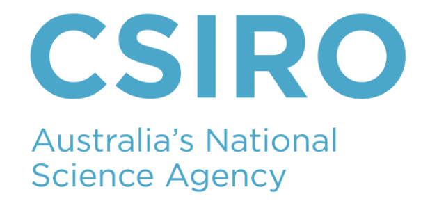
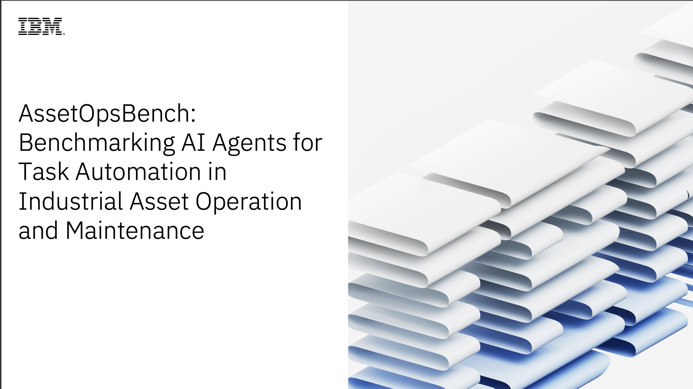
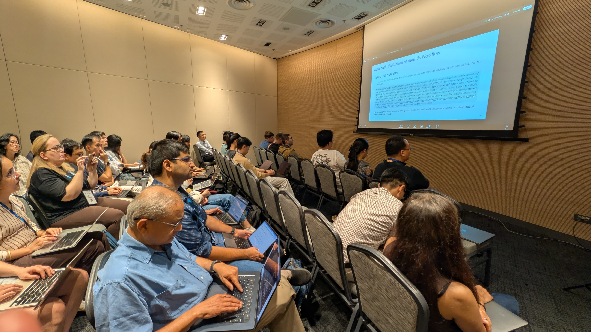
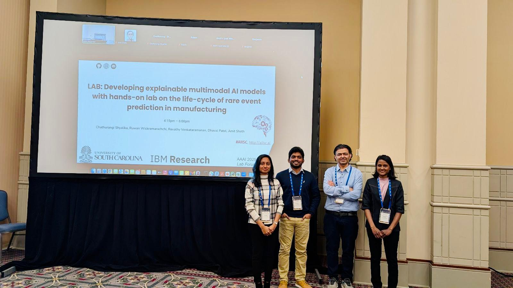
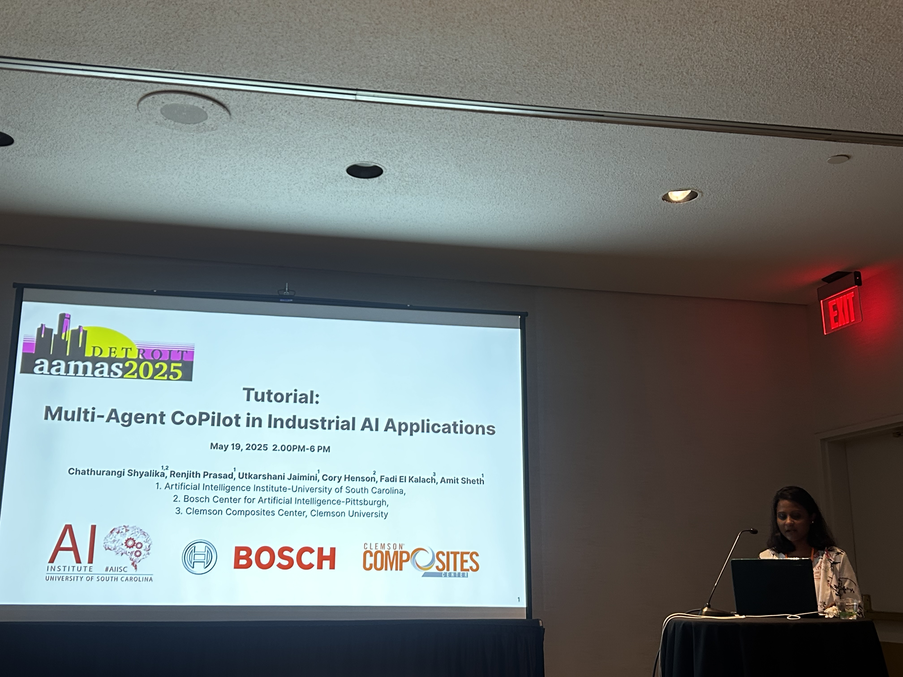
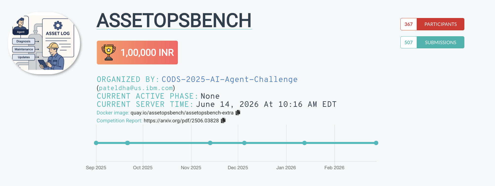

Tutorials and Engagements
Invited Speaker, CSIRO - Australia's National Science Agency
Invited speaker at CSIRO, Australia's national science agency, on research related to trustworthy agentic AI and industrial AI systems.

AssetOpsBench Benchmark Development
Led development of AssetOpsBench, a large-scale benchmark for evaluating agentic AI systems in industrial environments. Coordinated cross-institution efforts across academia and industry.

Building Reliable Industrial Agents with MCP
Hands-on AssetOpsBench tutorial for AI-driven operations, focusing on reliable industrial agents, MCP-based workflows, task automation, and evaluation in industrial asset management.

From Inception to Productization: Lifecycle of Multimodal Agentic AI in Industry 4.0
Hands-on lab on building and productizing multimodal agentic AI systems for Industry 4.0, organized in leading with IBM.

Developing Explainable Multimodal AI Models for Rare-Event Prediction
Hands-on lab on the lifecycle of rare-event prediction in manufacturing, covering explainable multimodal AI models and industrial anomaly prediction workflows.

Multiagent CoPilot in Industrial AI Applications
Tutorial on multi-agent copilots for industrial AI applications, including agentic architectures, industrial workflows, and trustworthy decision-support systems.

CODS 2025 Agentic AI Challenge
Organizer for the CODS 2025 Agentic AI Challenge, connected with AssetOpsBench-Live and public online evaluation of multi-agent performance in industrial operations.
